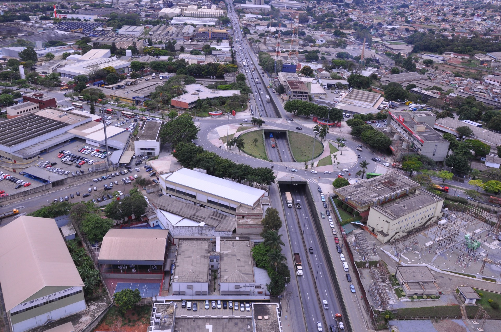

População brasileira chega à 203,1 milhões, segundo o IBGE
IBGE estimava que número seria de 207,8 milhões de habitantes; taxa de crescimento anual da população do país foi de 0,52%, a menor desde o primeiro levantamento, feito em 1872.
A população do Brasil chegou a 203,1 milhões de pessoas em 2022, de acordo com o Censo Demográfico de 2022, divulgado pelo Instituto Brasileiro de Geografia e Estatística (IBGE), nesta quarta-feira, 28. O número representa um aumento de 6,5% em relação a 2010, quando foi realizado o levantamento anterior. Ainda assim, a quantidade ficou abaixo do que o projetado pela própria instituição. No final de 2022, o IBGE estimava que o Brasil tinha 207,8 milhões de habitantes, enquanto o Censo ainda era realizado. No período de doze anos, houve um acréscimo de 12,3 milhões de pessoas. Os dados também revelam que, de 2010 a 2022, a taxa de crescimento anual da população do país foi de 0,52%, a menor desde o primeiro Censo realizado no Brasil, em 1872, há 150 anos.
“Em 2022, a taxa de crescimento anual foi reduzida para menos da metade do que era em 2010 (1,17%)”, afirma o coordenador técnico do Censo, Luciano Duarte. A região que concentra o maior quantitativo de pessoas é o Sudeste, com 84,8 milhões de habitantes, o que representa 41,8% da população do país. Os três Estados brasileiros mais populosos – São Paulo, Minas Gerais e Rio de Janeiro – concentram 39,9% da população brasileira. Já o Centro-Oeste é a região menos populosa, com 16,3 milhões de habitantes, ou 8,0% da população do país. O Censo também levantou que o número de domicílios do país cresceu 34% frente a 2010, totalizando 90,7 milhões. São Paulo concentra o maior número de domicílios, com 4,9 milhões, crescimento de 27% em relação a 2010. No país, a média de moradores por domicílio é de 2,79, queda em relação a 2010 (3,31).